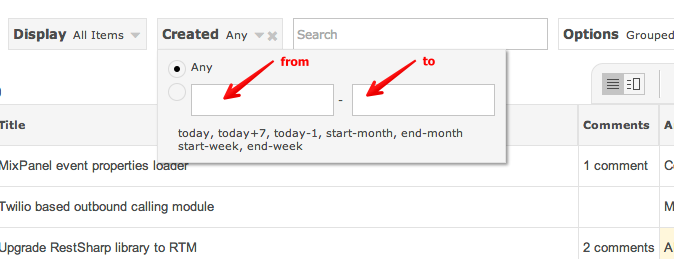
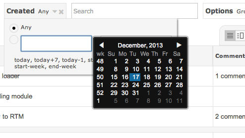
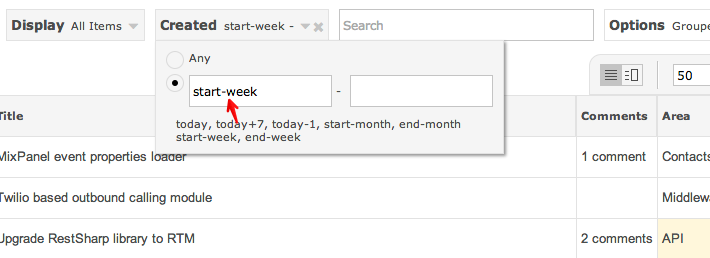

Date Search
Date fields:
- Created: when an item was created
- Revised: when an item was last revised
- Closed: when an item was marked as closed
- Resolved: when an items was marked as resolved
- Start Date: when an item is due to start
- Due Date: when an item is due for completion
Date Ranges
Everyone of the six above date fields has a FROM and TO date ranges.

Date Picker
Clicking on the field will bring up the Date Picker.

Special Date Options
You can also specify dates using built-in special keywords with + and - operators.

Special options:
- today: use today's date
- start-week: use the first date of the current week
- end-week: use the last date of the current week
- start-month: use the first date of the current month
- end-month: use the last date of the current month
The + and - math operators enable you to manipulate dates.
- today+5: evaluates to today's date plus five days
- today-3: evaluates to today's date minus three days
- start-week-2: evaluates to first date of current week minus two days
- end-month+10: evaluates to todaylast date of month plus ten days